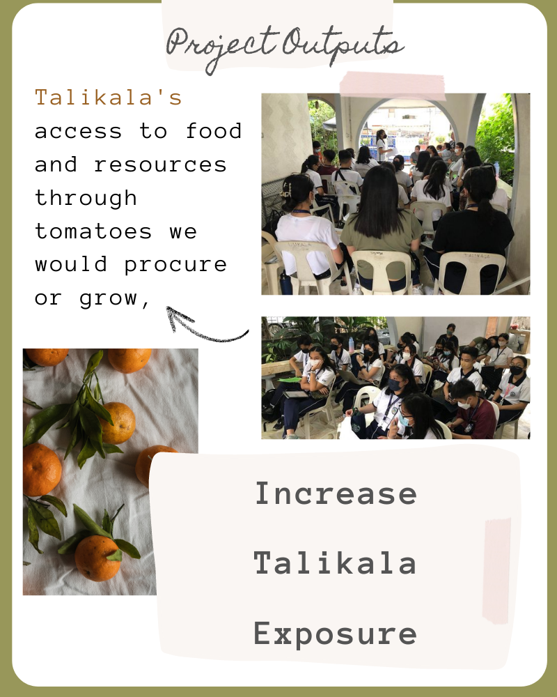

Talikala Institution


Talikala Institution


T.O.M.A.T.O was formed in response to the financial situation of our partner institution, Talikala. As students, we are inclined to look for creative solutions for our Talikala therefore we have decided to land on a project that involves planting. T.O.M.A.T.O stands for Tomatoes Organized and Matted Around Talikala's Objectives which in simple terms means that with the growing of our tomato plants we are able to provide Talikala with a sustainable source of food and a small income source.

Since Talikala is our group's primary focus,
we have desired objectives to tackle their issues,
particularly the lack of funding that contributes
to the lack of resources in their organization.
Being a non-profit, Talikala largely depends on
its sponsors and supporters to keep afloat,
particularly in this pandemic period

Women who have been affected by prostitution
and sex business
in general can benefit from the safety
and care provided by the Talikala
institution. For non-profit groups like
these, issues like a lack of
funding and resources are normal and expected, but there are solutions
available. The issue is evident within
the institution itself, as even
publications from Sunstar discuss the
scarcity of supplies, particularly
food, caused by a lack of funding that
has been made worse by the pandemic

We intend to create a project that focuses on providing the organization's individuals with entry to these two essential resources, given that this is the primary problem. We suggest a project that is focused on tomato fruit cultivation. We plan to plant with the basic materials like seeds, soil, and water. For instance, we use the cultivated fruits to sell or eatafter planting is finished. This kind of project, in our opinion, is a great way to address the problems the institution is facing, which makes it extremely significant and sustainable.


Our project's outcomes include raising Talikala's access to food and resources through the stock of tomatoes we would procure or grow, enabling them to independently learn gardening skills, and serving as mentors to help them live a healthy lifestyle through the actual planting of tomatoes and the food they consume.
